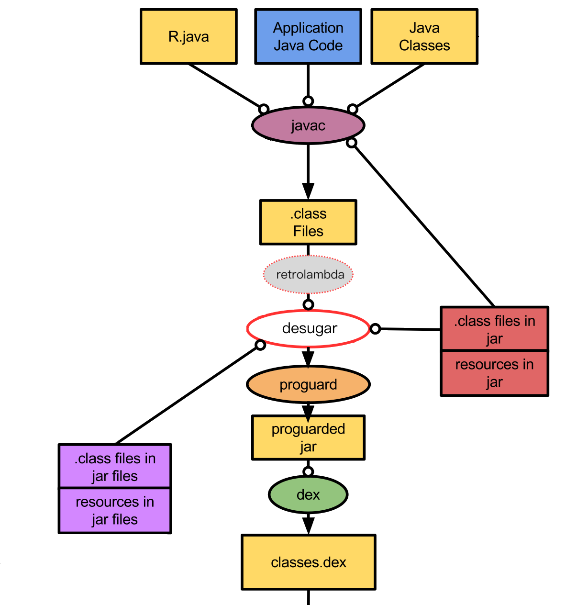

Android 如何实现支持 lambda 表达式
lambda 表达式是 java 8 新引入的语言特性，使用了通过 java 7 新引入的字节码指令 invokedynamic 来实现的（参考 Goetz-jvmls-lambda.pdf）。但在 dalvik 中并没有相应的指令，所以直接将 java 8 的字节码翻译为 dalvik 字节码目前是是不可行的。不过从 java lambda 的实现上来讲，实际上就是内部匿名类的语法糖。
既然是语法糖，那就是一个代码转换的事，把这个过程抽离出来另外实现，就可以在低版本的 jdk 中实现对 lambda 的支持。retrolambda，就是在字节码层面实现这个转换。retrolambda 的具体实现是基于 java 8 对 lambda 的底层实现来做的。在编译时，java 主要为当前类（lambda 表达式所在的类）生成一个方法，方法体（method body）就是 lambda body，这个方法称为 desugar 方法。运行时，第一次执行到这条 lambda 语句的时候，invokedynamic 调用引导方法（BSM），引导方法生成一个实现了具体函数式接口（Functional Interface，只有一个抽象方法的接口）的 VM 匿名类，这个类主要用于捕获 lambda 所需要的变量。第二步，把这个对象的构造函数和 invokdynamic 绑定起来，最后调用这个构造函数返回这个匿名类的实例，也就是所谓的 lambda object（以后再执行这条 invokedynamic 指令就是直接调用构造函数返回实例了）。调用的时候，再把接口方法需要的参数和捕获的变量传递给 desugar 方法来完成 lambda 的应用（可参考理解 invokedynamic）。
retrolambda 的做法是，源文件先用 java 8 编译，lambda body 转换为当前类的 desugar 方法编译器已经处理好了。接着解析编译后的 class 文件，遇到一条 invokedynamic 指令，就模仿它调用它的引导方法（LambdaReifier.reifyLambdaClass），把引导方法生成的匿名类作为当前类的匿名类保存下来，接下来还会对这些类再做一些变换，包括用单例优化无状态的 lambda 对象，将构造函数替换为工厂方法（BackportLambdaClass#visitEnd）。最后把 invokedynamic 替换为对该匿名类的实例化语句，就是这样把 invokedynamic 替换为等价的兼容代码。不过， retrolambda 的实现依赖于 java 对 lambda 的具体实现，后续的 java 版本不用匿名类了，那么 retrolambda 也就不能用了。
在 Android Studio 3.0 之前，要在基于 java 的 Android 开发中使用 lambda 表达一般都是用 retrolambda 来转换为 dex 能处理的字节码来实现的（就不提夭折的 Jack 了）。 不过 Android Studio 3.0 后，IDE 已经支持实现这个转换了，简称 desugar。具体如何开启可参看官方文档：Use Java 8 language features。IDE 的 desugar 过程比 retrolamda 的主要区别就是时机不同，原理上大致是一样的，IDE 的实现可见 LambdaDesugaring#visitInvokeDynamicInsn。 retrolambda 只能对当前项目进行转换，IDE 是在转换为 dex 之前做的转换，也就是说 IDE 还支持第三方用 java 8 编译的库。

原图见 Build Workflow - Android Studio Project Site
总之，Android 对 lambda 的实现与 java 8 并未太大区别，最主要的区别 java 8 的匿名类在运行时生成，而 Android 是在编译时生成（这样还可以避免了对 serializable lambda 的特殊对待）。
lambda 表达式
lambda 表达式在 java 中就是用于创建函数式接口实例（lambda object）的表达式，lambda 的实际使用中，主要将其分为两种类型，其一，无状态的（stateless） lambda 表达式，指的就是没有自由变量的 lambda 表达式。相对的，另一类就是有自由变量的 lambda 表达式。
什么是自由变量，把一道 lambda 表达式从其上下文抽离出来看一下：L1 = s -> Integer.valueOf(s)。表达式中的两个量 Integer 和 s，Integer 是常量，而 s 在参数列表中声明了（类型省略），这里称 s 是一个绑定变量，所有量都是确定的，所以 L1 就是无状态的 lambda 表达式（可以认为它的调用不会产生任何副作用）。
另外一个例子：() -> System.out.println(Arrays.toString(args))。args 是什么？脱离了上下文就无法确定了，如果在上下文中看，就很清楚 args 是什么了：
public static void main(String[] args) {
Runnable r = () -> System.out.println(Arrays.toString(args));
r.run();
}
args 在这里就是自由变量。要对 lambda 表达式求值前所有自由变量都是得已知的，java 中所有自由变量都必须在编译期确认（另外一种不同的实现可参考 Groovy），为自由变量确定值的过程称为变量捕获（capturing），把变量捕获后和 lambda 表达式绑定在一起的结构就是闭包（closure），lambda 对象实例就是一个闭包。java 中就是通过匿名类来存放这些捕获这些变量，而且是以 final 引用的形式，所以更应该说是值而不是变量。
先看一下最简单的无状态 lambda：
public class LambdaTest {
public void testStateless() {
Runnable r = (() -> System.out.println("pure"));
r.run();
}
}
编译后再反编译，可以看到，变成了两个类（可以在 build/intermediates/transforms/desugar 中找到）：
LambdaTest:
public class LambdaTest {
public void testStateless() {
Runnable r = LambdaTest$$Lambda$0.$instance;
r.run();
}
static void lambda$testPure$0$LambdaTest(){
System.out.println("pure");
}
}
LambdaTest$$Lambda$0:
final class LambdaTest$$Lambda$0 implements Runnable {
static final Runnable $instance = new LambdaTest$$Lambda$0();
private LambdaTest$$Lambda$0() {
}
public void run() {
LambdaTest.lambda$testPure$0$LambdaTest();
}
}
lambda body 变成了 LambdaTest 中的一个静态方法，也就是所谓的 desugar 方法，另外还生成了一个类 LambdaTest$$Lambda$0 实现了函数式接口，在其实现方法里再去调用 desugar 方法，无状态 lambda 对象不需要保存额外的参数，这里用单例进行优化。
如果捕获了变量，以局部变量和形式参数为例，无论是局部变量还是上下文方法的形式参数，它们的值和类型都是编译时确定的：
public void capturingLocal(String strp) {
String str = "lexical";
Runnable r = () -> System.out.println(str + strp);
r.run();
}
LambdaTest$$Lambda$1：
final class LambdaTest$$Lambda$1 implements Runnable {
private final String arg$1;
private final String arg$2;
LambdaTest$$Lambda$1(String var1, String var2) {
this.arg$1 = var1;
this.arg$2 = var2;
}
public void run() {
LambdaTest.lambda$capturingLocal$1$LambdaTest(this.arg$1, this.arg$2);
}
}
原先的 lambda 表达式赋值语句变成了 Runnable r = new LambdaTest$$Lambda$1(str, strp)，自由变量都通过 lambda 对象构造器进行捕获并保存起来，对 lambda 求值的时候再传递给 desugar 方法，这里 Runnable 的方法没有形式参数，如果有形式参数的话，这些捕获的变量会排在形式参数后面再传递给 desugar 方法。
如果在 lambda 中引用了对象字段：
private String stri = "instance";
public void capturingInstance() {
Runnable r = () -> System.out.println(stri);
r.run();
}
LambdaTest$$Lambda$4:
final class LambdaTest$$Lambda$4 implements Runnable {
private final LambdaTest arg$1;
LambdaTest$$Lambda$4(LambdaTest var1) {
this.arg$1 = var1;
}
public void run() {
this.arg$1.lambda$capturingInstance$4$LambdaTest();
}
}
可以看到 lambda 对象保存了上下文类的引用，无论是实例变量还是实例方法，实际上都有一个隐性的接收者就是 this，当然也可以显性的声明，在 lambda body 中的 this 引用指向的就是其上下文的类，而不是 lambda 对象（与匿名类的区别）。在这里 lambda 表达捕获的变量就是实例变量的接收者 this 而不是实例变量本身。而且可以看到 lambda 的 desugar 方法变成了实例方法，用这种方式，lambda body 几乎不用做任何转换只需照搬进方法体就行。还包括对 super 的处理，lambda 对象无法捕获 super，只能通过调用 this 的实例方法来实现对 super 的调用，可见用 desugar 方法来实现是十分便利的。
this 的捕获，对于 Android 开发来说特别要注意，在 Activity 中使用 lambda 表达式的话，意味着会通过 final 引用的形象将当前 Activity 实例传递到外部去，稍不注意便会引起泄露。一个显而易见的技巧，将实例字段赋值给局部变量，就不会捕获 this 引用了。当然对于生命周期相关的对象来说还是不安全的，比如 View。
方法引用
方法引用基本可以当成是 lambda 表达式的一个特例，方法引用都可以用相应的 lambda 表达式来代替，有一个例外就是带有类型参数方法的函数式接口，能用方法引用但不能用 lambda 表达式，见 java - Lambda Expression and generic method - Stack Overflow。方法引用也分为捕获与非捕获，对于无须捕获接的方法引用主要有：
- 静态方法
- 构造器
- 未绑定的实例方法
什么是未绑定的实例方法？方法引用语法可以大致认为是接收者::方法名这样的形式，方法可以是实例方法或者是静态方法，当方法是实例方法而接收者是类引用时，这时接收者就是一个未绑定的接收者：
list.filter(String::isEmpty)
isEmpty 是实例方法，而接收者是类引用，在这里接收者在运行会被替换为被替换为 list 内的元素，等价于这样的 lambda 表达式：
list.filter(s -> s.isEmpty())
注意非绑定的实例方法引用是有二义性的，java 根据方法的声明去推定 isEmpty 是实例方法还是静态方法，以下面的类为例：
public class C{
public static boolean isEmpty(C c);
public boolean isEmpty();
}
如上面的方法声明两个方法对于表达式 list.filter(C::isEmpty) 来说都是合法的，java 也就无法推断出这里是指哪个方法引用，所以编译器报错。
需要捕获的方法引用，也就是已绑定实例的方法引用，包括实例方法，内部类（数组）的构造器，super 方法。接收者就是闭包所要捕获的变量。但要注意一点方法引用是没有隐式声明的 this 引用的。比如下面两个方法，从语义上来说是等价的，
public void capturingInstance() {
Predicate<String> c = s -> stri.equals(s);
}
public void capturingIntanceMethod() {
Predicate<String> c = stri::equals;
}
但是他们捕获的引用却不一样，上文可知 lambda 表达式捕获的是隐式声明的 this，而方法引用捕获的却是直接接收者：
final class LambdaTest$$Lambda$8 implements Predicate {
private final String arg$1;
private LambdaTest$$Lambda$8(String var1) {
this.arg$1 = var1;
}
static Predicate get$Lambda(String var0) {
return new LambdaTest$$Lambda$8(var0);
}
public boolean test(Object var1) {
return this.arg$1.equals((String)var1);
}
}
还有一点，使用方法引用，因为方法已经是现成的，大部分情况就没必要重新生成一个 desugar 方法。
但有例外，super 和可变参数，需要一个桥接方法。对于 super 来说，lambda 对象是无法不会当前类的 super 引用的，所以需要借由当前类的实例方法来实现对 super 的引用。
接收者也可以是表达式：
Predicate<String> c = (stri.equals("abc") ? "abc" : "bcd")::equals;
在这里捕获的是表达式求值的结果而不是表达式。
所以对于 Activity 来说，要格外注意下面几种情况可能导致引用泄露：
this关键字的方法引用super关键字的方法引用- 非静态内部类的构造器引用
- Activity 或其实例变量可变参数方法引用